CICLO
Entrega 3
Felipe Berney · Abril Dobler Sistemas generativos e IA para Diseño · K534/K576 UdeSA · 03.11.2026
La hipótesis
Agosto 2026
-
La preguntapunto de partida
Cruzando datos de pasarela, búsqueda y venta, ¿se puede ubicar un atributo de moda en su ciclo de vida?
-
Tres capasdato
Pasarela — qué muestran los diseñadores.
Búsqueda — qué busca la gente.
Venta — qué compra el mercado masivo. -
Resolucióndato
Las tres capas tienen resolución temporal. Se pueden comparar año a año. Eso es lo que permite cruzarlas.
-
El límitehallazgo
La mitad sí: leer el presente. La mitad no: anticipar el futuro.
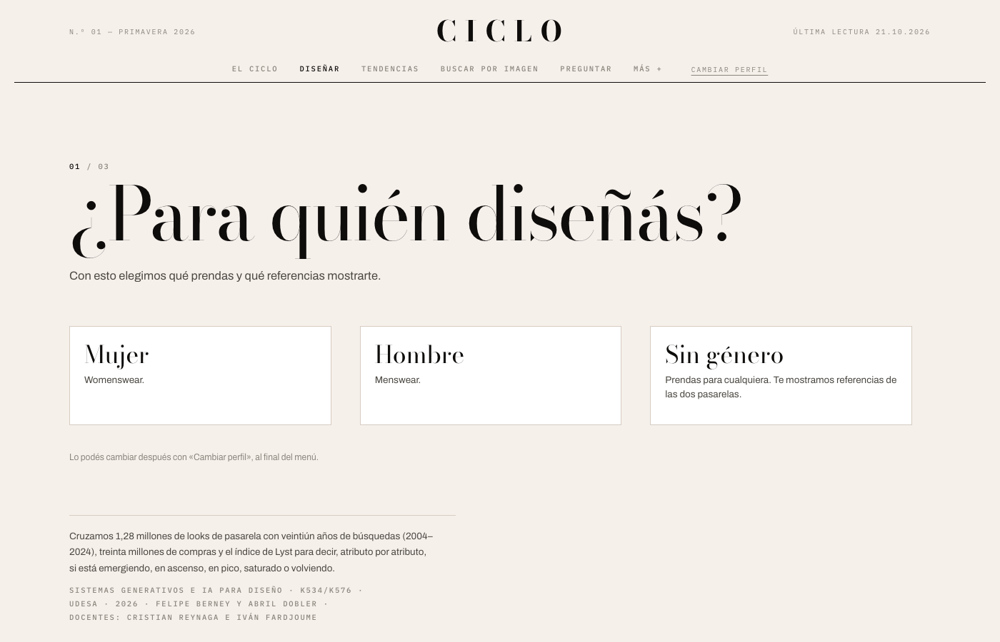
La entrada — las tres preguntas
La unidad de análisis
El cambio conceptual más importante
1 sep 2026
-
El problemalímite
«Tendencia» no existe en ningún dataset. No hay esa columna en Vogue, ni en Google, ni en H&M.
-
La soluciónhallazgo
La unidad pasa a ser el atributo — un color, una estampa, un corte, un material — porque es lo único que aparece a la vez en la pasarela, la búsqueda y el catálogo.
-
La consecuenciadecisión
Todo lo que vino después depende de esta decisión. Permite cruzar los datos sin etiquetas manuales.
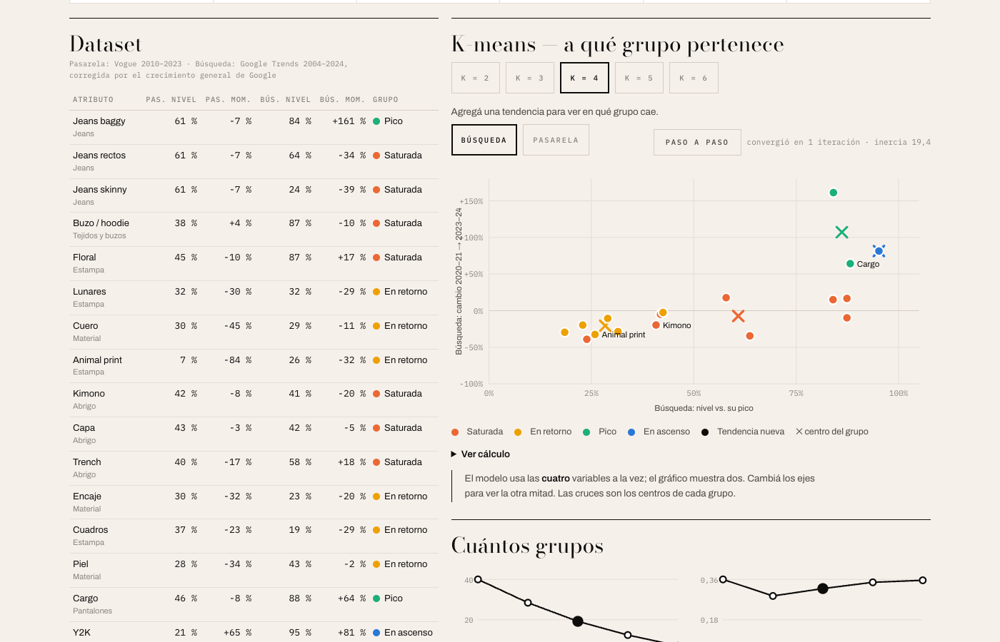
La pantalla de Método — qué está medido y qué interpretado
Las fuentes
Sep – Oct 2026
2026 está contaminado
El hallazgo más inesperado
Oct 2026
-
El hallazgolímite
Desde 2025, Google cambió cómo mide. En 2026, 69 de 70 series suben a la vez.
-
La evidenciadato
Mediana +99% en 2026. El trench coat, que siempre picó entre septiembre y febrero, pica en abril. Es la medición, no la moda.
-
La decisióndecisión
Todo el análisis corta en 2024. Sin el ancla del trench coat no lo hubiéramos visto. 74 atributos con dato propio, 42 prestados, 17 sin dato. Declarado en la app.
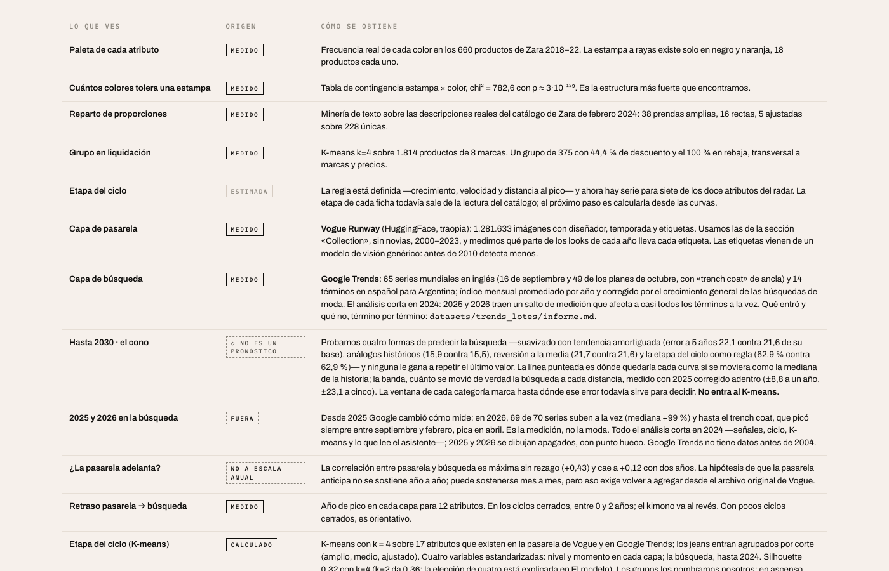
Método — cada atributo con su procedencia declarada
K-means, k = 4
Sin etiquetas de etapa — el algoritmo solo agrupa
Sep 2026
presencia creciente en pasarela
presencia en venta masiva
sobre-representado en catálogos masivos
señal de búsqueda resurgiendo
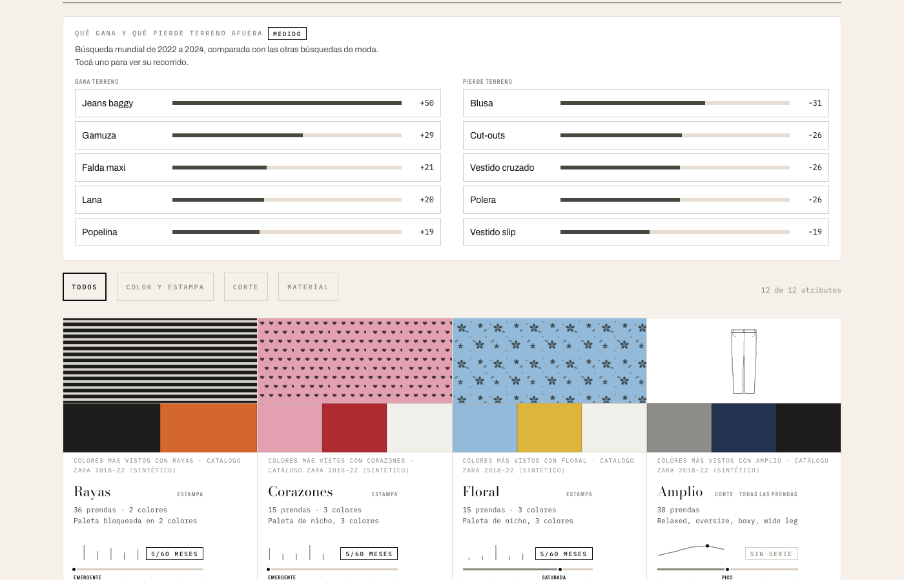
Tendencias — la etapa del K-means en cada tarjeta
Validación externa
El modelo no vio ninguno de estos datos
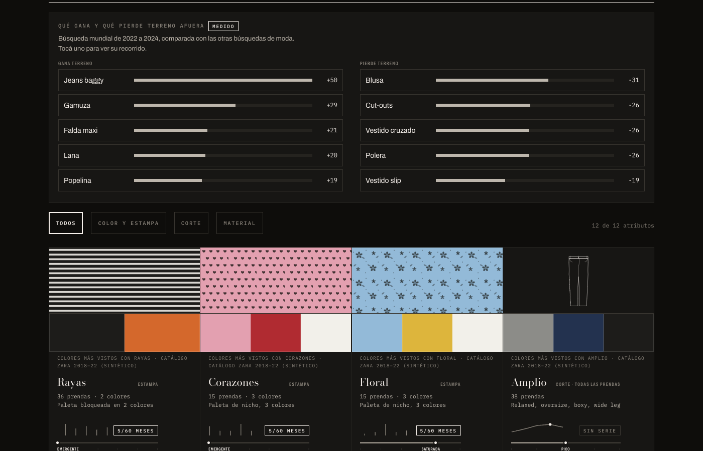
Las señales Entrar / Esperar / Salir
1 / 2Cómo se lee
El color significa una sola cosa
-
▲ Entrar■ Esperar▼ Salir
-
La regladato
El color es solo la señal, siempre con su palabra. Que algo suba o baje en un gráfico va en negro, sin color.
-
Procedenciadato
● medido — dato propio medido directamente.
↪ prestado — serie de un pariente del atributo.
◇ interpretado — calculado o estimado por un modelo. -
Sin datolímite
Si no hay serie medida: «sin dato», siempre declarado. Nunca se esconde.
Verde = Entrar · ámbar = Esperar · rojo = Salir
Tendencias
La pantalla principal
-
Cada tarjetadato
Etapa del K-means · señal · procedencia (medido / prestado / sin dato).
-
El perfildato
El perfil (fast / premium / nicho) cambia la recomendación pero no el dato. El mismo dato puede decir «Entrar» a un fast fashion y «Esperar» a una marca premium.
-
65 serieshallazgo
65 series de Google Trends, con filtro de estación, cortadas en 2024. Las que no entran al K-means aparecen igual, con su motivo declarado.
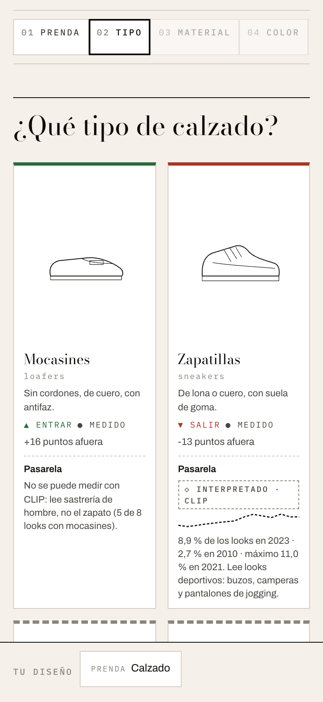
La pantalla principal
1 / 2Diseñar
Para quién diseñás algo concreto hoy
-
Taxonomíadato
Prenda → corte → material → estampa. Jean = pantalón + denim. Cada combinación es una hoja del árbol.
-
El ejemplohallazgo
Jean amplio → Esperar. Jean ajustado → Salir. El mismo material, distinto corte, conclusión opuesta.
-
La barradato
Acumula lo elegido. La ficha final recomienda solo con evidencia; sin serie medida, dice «sin dato» y no recomienda.
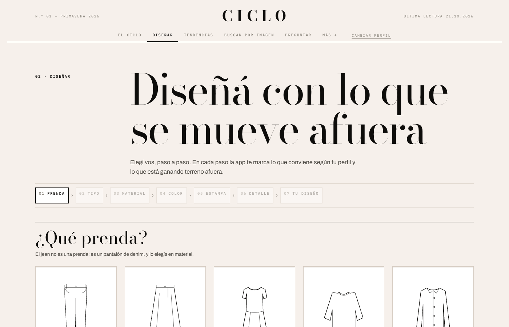
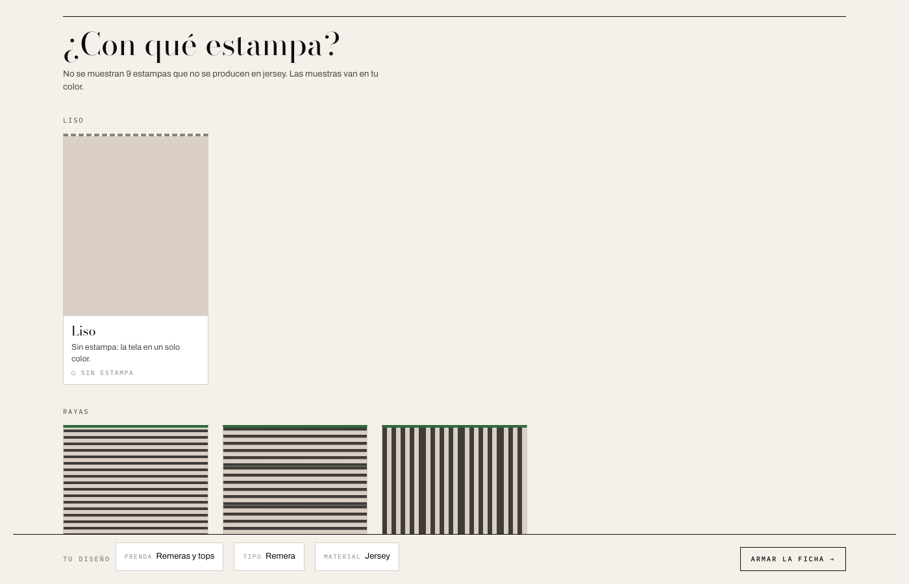
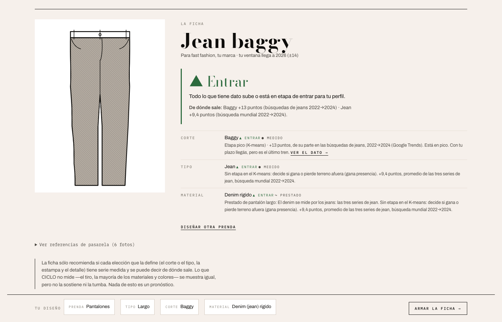
Diseñar — de la prenda a la ficha
1 / 3El ciclo
¿La pasarela anticipa la búsqueda?
-
La correlacióndato
Correlación máxima entre pasarela y búsqueda: +0,43 sin rezago. Con 2 años de rezago: +0,12.
-
Lo que no se sostienelímite
La hipótesis de que la pasarela anticipa no se sostiene año a año.
-
Lo que sídato
Ciclos cerrados: 0 a 2 años entre el pico en pasarela y el pico en búsqueda. La correlación es más fuerte en el mismo período que con rezago.
-
Lo que faltadecisión
La resolución mes a mes todavía no se pudo probar. Es la única versión de la hipótesis que no descartamos.
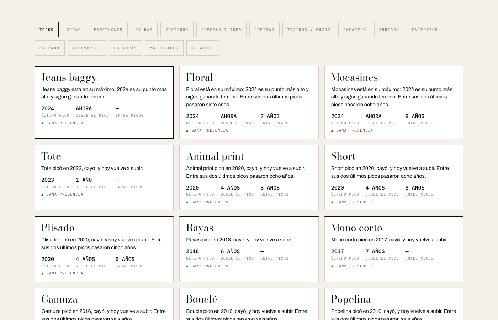
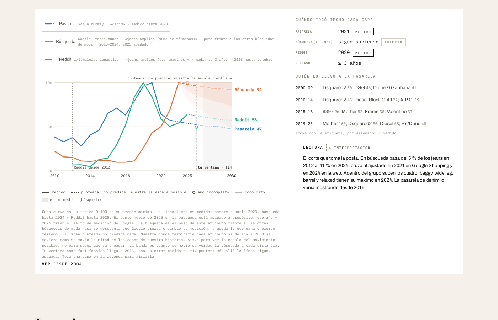
El ciclo — correlación y proyección
1 / 2Buscar por imagen
CLIP ViT-B/32 — visión por computadora
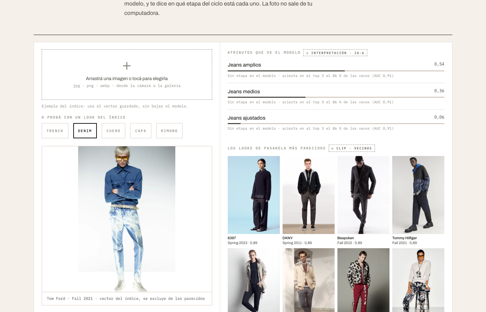
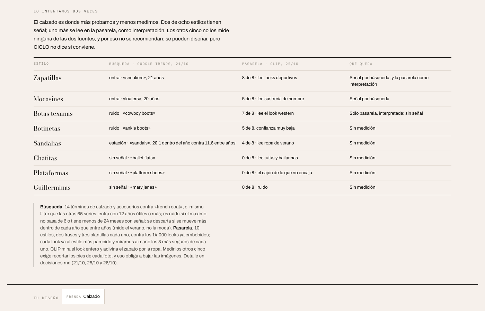
CLIP — lo que puede y lo que no
1 / 2Preguntar
El LLM nunca ve una fila de datos
-
La reglalímite
El modelo de lenguaje lee métricas ya calculadas, nunca los datos crudos.
-
Cómo funcionadato
La API key es del usuario, llamada directa desde el navegador. Ninguna clave queda en el repo. Powered by Groq.
-
La respuestahallazgo
Siempre marcada como ◇ interpretación. El dato es nuestro. La lectura es del modelo.
-
chi² = 782,6dato
p ≈ 3·10⁻¹²⁹ — las respuestas del LLM no son aleatorias respecto del dato: el modelo sí lee la señal.
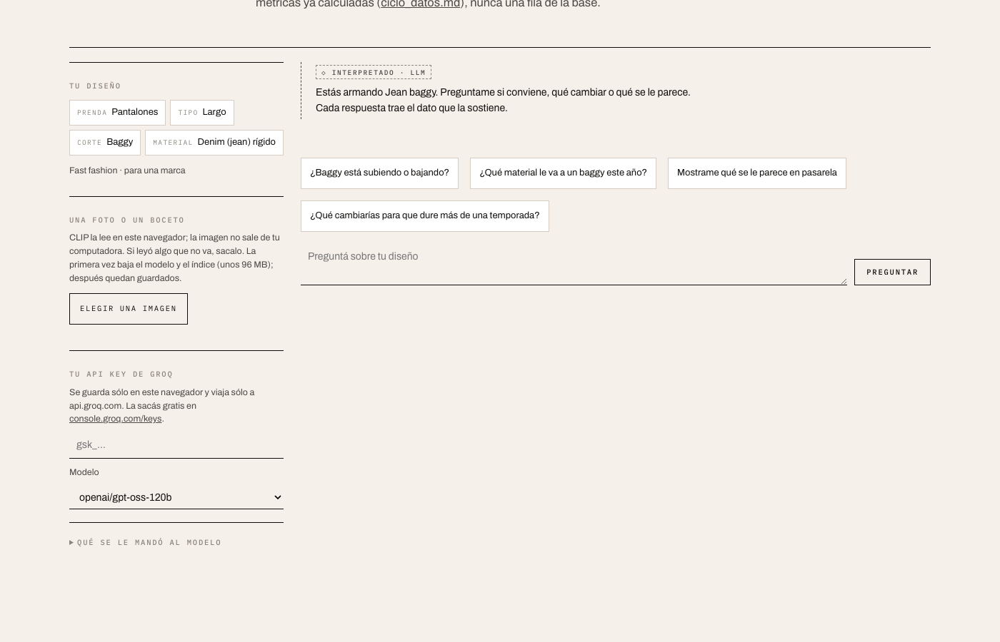
Preguntar — el LLM con la API key del usuario
La predicción
Ningún método le gana a repetir el último valor
La punteada hasta 2030 no es un pronóstico: es donde quedaría la curva si se moviera como la mediana de su historia.
La proyección — mediana de la historia, no pronóstico
Límites declarados
- Sin género
No hay columna de género en Vogue ni en H&M. No se simuló: se declara en Método.
- Google Trends 2025–26
Contaminados por cambio de medición. Todo el análisis corta en 2024.
- Pasarela no anticipa
Correlación máxima sin rezago (+0,43). Con 2 años: +0,12. La hipótesis no se sostiene a escala anual.
- Calzado sin señal
CLIP lee la ropa, no el zapato. 5 estilos sin medición, declarados atributo por atributo.
- Datos sintéticos
Zara 2018–22 y Mix de marcas son demostraciones de método, no señales de moda. Rotulados así en la app.
- 6 fichas sin K-means
Su etapa se estimó sobre un catálogo sintético. No recomiendan con esa etapa: usan su serie de búsqueda o no recomiendan.
Demo
en vivo
felipeberney-boop.github.io/ciclo
Tendencias → ficha → Diseñar → Preguntar 5 minutos · tener API key de Groq
CICLO
Un instrumento descriptivo,
no un predictor.
felipeberney-boop.github.io/ciclo
Próximo paso: calcular la etapa desde las curvas para todos los atributos.
La pasarela mes a mes: la única versión de la hipótesis que no pudimos descartar.
Felipe Berney · Abril Dobler UdeSA · Sistemas generativos e IA para Diseño · 2026